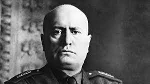
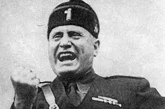
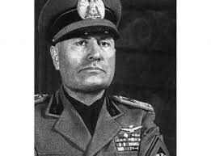

Фото Муссоліні



Беніто Муссоліні народився 29 липня 1883 року
в Італії. Він був політиком і фашистським лідером.
Заснував фашистську партію в 1919 році. У 1922 році
очолив уряд Італії, ставши диктатором. Муссоліні був
союзником Гітлера під час Другої світової війни.
Його режим завершився в 1945 році, коли Італія приєдналася
до союзників, і Муссоліні був усунений від влади і стратжений.
1